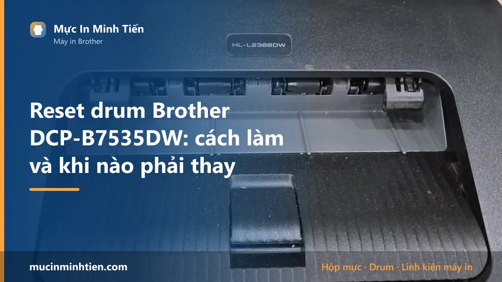
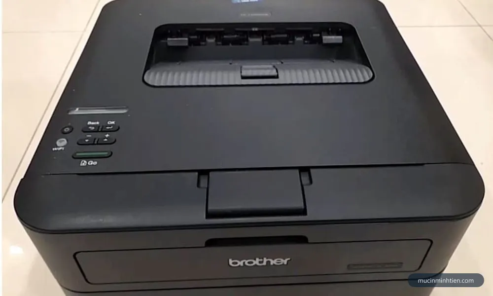
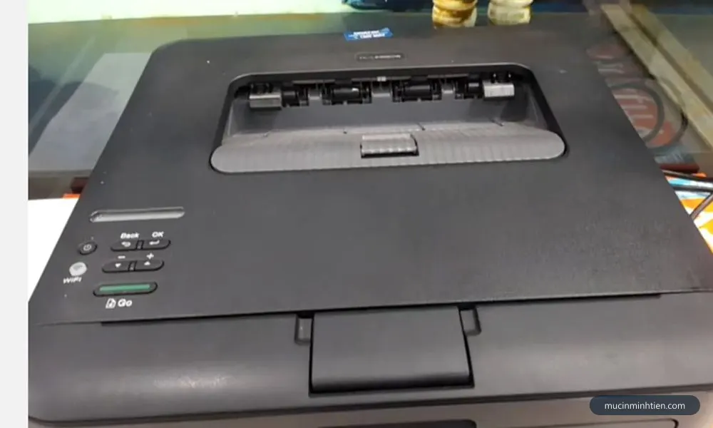
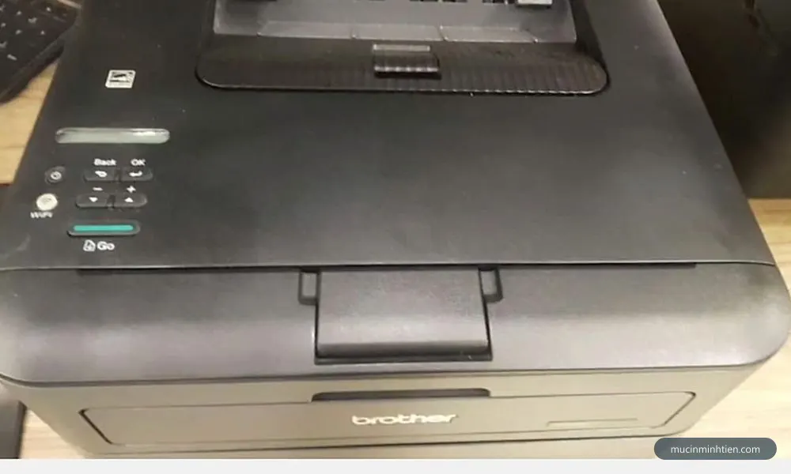
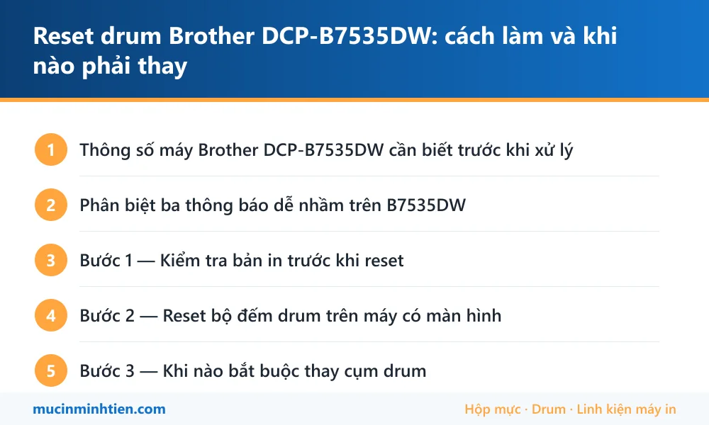

Reset drum Brother DCP-B7535DW: cách làm và khi nào phải thay

Brother DCP-B7535DW báo Drum End Soon nghĩa là bộ đếm trống đã tới ngưỡng cảnh báo, không phải trống đã hỏng. Reset bộ đếm bằng cách mở nắp trước rồi thao tác trên bảng điều khiển. Nhưng chỉ reset khi bản in còn sạch — nếu đã có sọc hoặc chấm lặp lại thì phải thay cụm drum DR-B022.
Thông số máy Brother DCP-B7535DW cần biết trước khi xử lý
Biết đúng máy mình đang dùng loại nào giúp khỏi mua nhầm vật tư và khỏi làm theo hướng dẫn của dòng khác.
| Hạng mục | Chi tiết |
|---|---|
| Kiểu máy | Đa năng laser đen trắng — in, scan, copy, có Wi-Fi |
| Màn hình | Có màn hình LCD, thao tác qua menu chứ không đếm đèn |
| Hộp mực | Brother TN-B023 (dùng chung phôi với TN-B020, B021, B022) |
| Cụm drum | DR-B022 — tách rời khỏi hộp mực, thay riêng được |
| Điểm cần biết | Hộp mực và drum là hai bộ phận riêng, hai bộ đếm riêng |
Phân biệt ba thông báo dễ nhầm trên B7535DW
Máy này có màn hình nên báo lỗi bằng chữ, nhưng ba thông báo dưới đây khác nhau hoàn toàn về cách xử lý — nhầm là mua sai vật tư.
- Drum End Soon — trống sắp hết tuổi thọ theo bộ đếm. Máy vẫn in bình thường. Reset được nếu bản in còn sạch.
- Replace Drum — bộ đếm đã hết. Vẫn reset được, nhưng nếu bản in đã có sọc thì reset chỉ tắt thông báo chứ không cứu được chất lượng in.
- Replace Toner / Toner Low — đây là hộp mực, không phải drum. Xử lý khác hẳn: nạp mực hoặc thay hộp TN-B023.
Sai lầm phổ biến nhất là thấy báo Drum rồi đi mua hộp mực, hoặc ngược lại. Trên dòng này hộp mực và cụm drum là hai món tách rời, tuổi thọ khác nhau — drum bền hơn hộp mực nhiều lần.

Bước 1 — Kiểm tra bản in trước khi reset
Đây là bước quan trọng nhất và hầu như ai cũng bỏ qua. Reset chỉ đặt lại con số đếm; nó không làm mới bề mặt trống.
In một trang có mảng đen lớn rồi soi kỹ:
- Bản in sạch, không sọc, không chấm → trống còn tốt, reset thoải mái, dùng tiếp được khá lâu.
- Có sọc đen dọc lặp lại đều đặn → bề mặt trống đã xước. Reset chỉ tắt thông báo, sọc vẫn nguyên. Cần thay drum.
- Có chấm đen lặp lại theo chu kỳ cố định → trống bị điểm hỏng cục bộ, cũng phải thay.
Cách phân biệt sọc do drum với sọc do gạt mực có ở bài máy in bị sọc đen dọc — đọc trước khi quyết định mua vật tư sẽ đỡ tốn tiền oan.

Bước 2 — Reset bộ đếm drum trên máy có màn hình
Dòng B7535DW có màn hình nên thao tác qua bảng điều khiển, không phải bấm tổ hợp mù như các máy đời cũ không màn hình.
- Bật máy, đợi cho vào trạng thái sẵn sàng.
- Mở nắp trước — bước này bắt buộc, máy chỉ cho vào chế độ reset khi nắp đang mở.
- Trên bảng điều khiển, giữ nút OK cho tới khi màn hình đổi sang mục chọn.
- Chọn mục Drum bằng phím mũi tên.
- Xác nhận reset, đợi màn hình báo hoàn tất.
- Đóng nắp trước, máy khởi động lại và thông báo biến mất.
Trình tự có thể khác đôi chút giữa các bản firmware. Nếu giữ OK mà máy không phản hồi, tra đúng model tại trang hỗ trợ Brother Việt Nam thay vì làm theo video của model khác — bố trí menu giữa các dòng B7520, B7535, B2080 không giống nhau.

Bước 3 — Khi nào bắt buộc thay cụm drum
Reset là giải pháp kéo dài, không phải giải pháp vĩnh viễn. Bốn dấu hiệu cho thấy đã tới lúc thay thật:
- Sọc hoặc chấm lặp lại đều sau khi đã vệ sinh và thay hộp mực mới.
- Đã reset từ hai lần trở lên và bản in xuống cấp rõ sau mỗi lần.
- Bề mặt trống nhìn thấy vết xước khi soi nghiêng dưới ánh đèn.
- Bản in mờ loang lổ dù hộp mực còn đầy — lớp phủ cảm quang đã mòn.
Cụm drum DR-B022 cho dòng này có sẵn tại kho, giá tham khảo từ 299.000đ. Nếu cả hộp mực lẫn drum đều tới hạn thì có bộ combo hộp mực B022 kèm cụm drum, giá tham khảo 385.000đ — thường rẻ hơn mua rời từng món.
Bảng tra: dấu hiệu nào ứng với nguyên nhân nào
| Dấu hiệu | Nguyên nhân | Cách xử lý | Chi phí |
|---|---|---|---|
| Màn hình báo Drum End Soon, bản in sạch | Bộ đếm tới ngưỡng, trống còn tốt | Reset bộ đếm, dùng tiếp | 0 đ |
| Báo Replace Drum, bản in vẫn sạch | Bộ đếm hết hạn | Reset được, theo dõi bản in | 0 đ |
| Sọc đen dọc lặp lại đều | Bề mặt trống đã xước | Thay cụm drum DR-B022 | từ 299.000 đ |
| Chấm đen lặp theo chu kỳ cố định | Trống hỏng điểm cục bộ | Thay cụm drum | từ 299.000 đ |
| Báo Replace Toner | Hết mực, không liên quan drum | Nạp mực hoặc thay TN-B023 | từ 178.000 đ |
| Giữ OK mà máy không vào menu reset | Chưa mở nắp trước, hoặc sai model | Mở nắp trước rồi thử lại | 0 đ |
Vật tư cho Brother DCP-B7535DW có sẵn tại kho 77 Bắc Hải, Phường Diên Hồng, TP.HCM — xem bảng giá 773 mã hoặc gọi 0915 510 203 kèm model máy.
Khi nào nên gọi kỹ thuật viên
- Đã reset mà bản in vẫn sọc — cần thay drum, nên để thợ kiểm tra luôn gạt mực và hộp mực
- Không vào được menu reset dù đã mở nắp trước
- Bản in vừa mờ vừa sọc, không rõ do drum hay do hộp mực
- Máy báo lỗi khác kèm theo Drum End Soon
- Văn phòng nhiều máy Brother, cần bảo trì đồng loạt
Báo giá xử lý Brother DCP-B7535DW tận nơi
| Hạng mục | Giá tham khảo |
|---|---|
| Reset bộ đếm drum tận nơi kèm kiểm tra bản in | từ 100.000 đ |
| Cụm drum DR-B022 | từ 299.000 đ |
| Hộp mực TN-B023 / B020 / B021 / B022 | từ 178.000 đ |
| Bộ hộp mực B022 kèm cụm drum | từ 385.000 đ |
| Nạp mực Brother tận nơi | 80.000 – 150.000 đ |
Kỹ thuật viên kiểm tra và báo giá trước khi làm — xem cam kết ở dịch vụ sửa máy in tận nơi TP.HCM.
Cách phòng tránh tái phát
- Reset đúng lúc, đừng đợi máy dừng hẳn. Reset khi bản in còn sạch thì trống dùng được thêm lâu; đợi tới lúc sọc mới xử lý thì đã muộn.
- Kiểm tra bản in mỗi lần thay hộp mực. Đây là lúc dễ nhìn bề mặt trống nhất.
- Không sờ tay vào mặt trống khi tháo lắp — dấu vân tay để lại vệt trên bản in.
- Tránh để trống ra ánh sáng mạnh quá vài phút, lớp cảm quang xuống cấp nhanh.
- Dùng mực đúng loại. Mực bột sai chủng loại làm xước trống nhanh hơn nhiều, và trống đắt hơn hộp mực.
